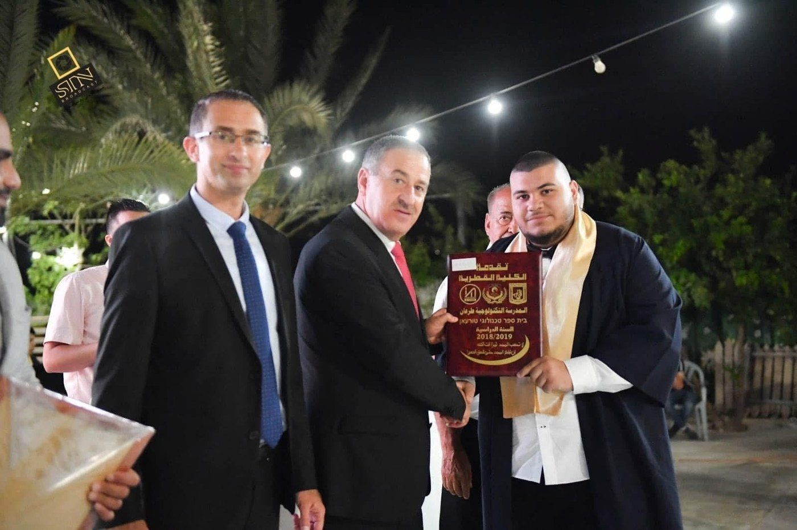
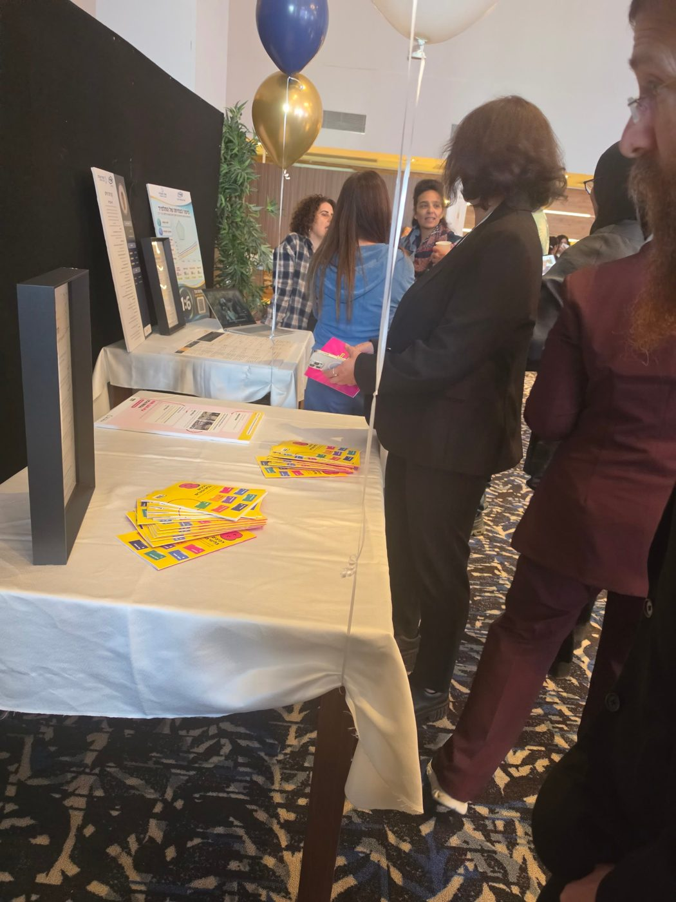
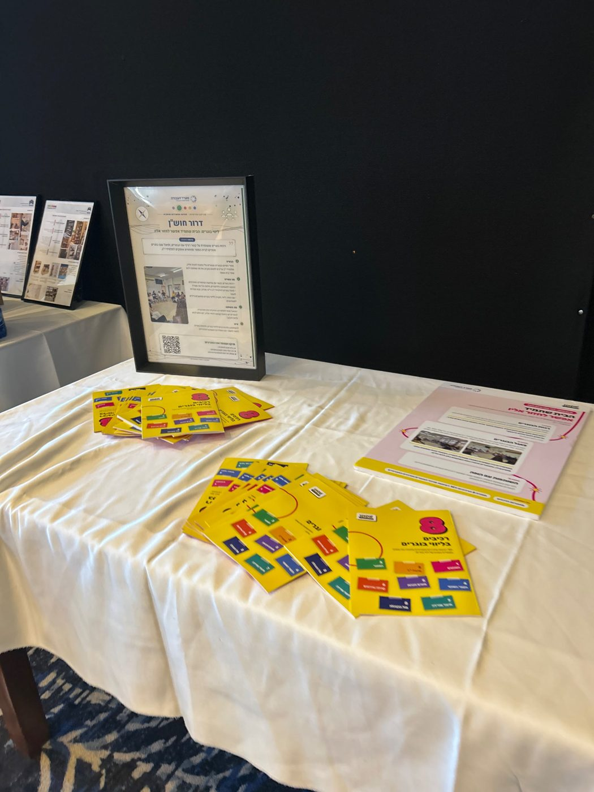
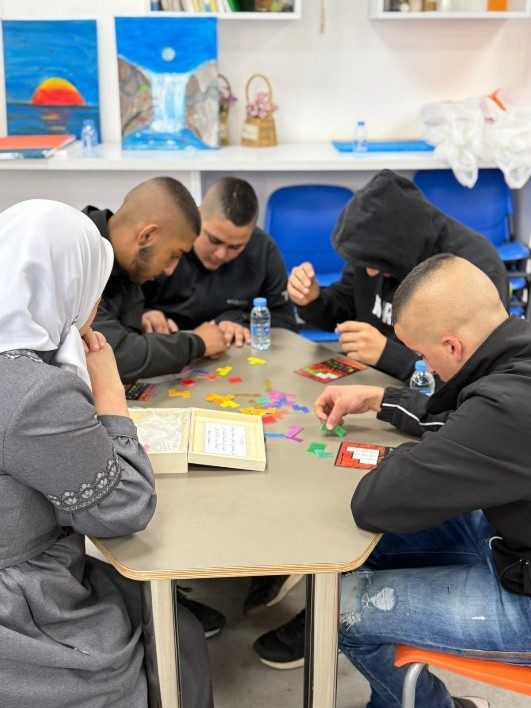
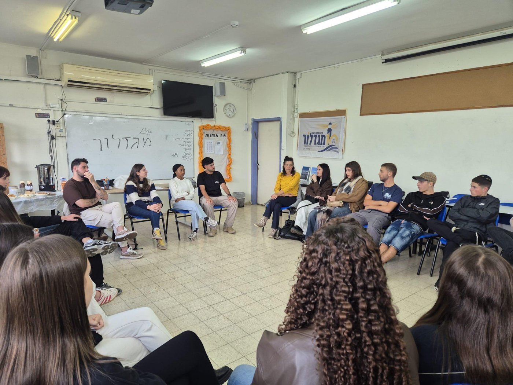

הופה בכנס המנהלים
בכנס מנהלים ורשתות בתי ספר מקצועיים של המנהל להכשרה מקצועית במשרד העבודה, במוזיאון החדשנות, הוצגו שני דוכנים של ליווי בוגרים עם הופה: מנאראת טורעאן ותיכון חושן.
הדרך של בוגר, על שולחן אחד
מי שעבר לאורך השולחן עבר את הדרך של בוגר, תחנה אחר תחנה, מכיתה י״ב ועד הצעד הבא. בית הספר מלווה את הבוגרים יחד עם מרכז ריאן והופה.
הכנו לדוכן קאפה גדולה, "גאוות הבוגרים של טורעאן", בעברית ובערבית: מילת המנהל, סיפורי הבוגרים, השותפות עם מרכז ריאן, והקולות של הרכז ושל בוגר.

- י״ב
- יום הסיום
- תחילת הלימודים
- היום
- כנס בוגרים
"מבחינתי, ההצלחה האמיתית אינה מסתיימת בתעודת הסיום. ההצלחה היא לראות את התלמיד ממשיך ללמוד, רוכש מקצוע, משתלב בעולם העבודה ובונה לעצמו עתיד עצמאי ומכובד."מוניר עבדאלהאדי, רכז הבוגרים, מנאראת טורעאן
הבית שתמיד אפשר לחזור אליו
רכזת בוגרים שנמצאת בקשר עם שלושת המחזורים האחרונים, ופאנל שבו בוגרים חזרו לבית הספר וסיפרו לתלמידי י״ב ו-י״א על מכינה, שירות צבאי ושירות לאומי.
הכנו לדוכן קאפה עם המסלול בשלוש תחנות: רכזת הבוגרים, פאנל הבוגרים והשותפות עם הופה.


"להראות להם שיש להם תמיד כתובת לחזור אליה, לפנות אליה כשיש צורך, או סתם לבוא ולתת חיבוק!"ברכי, רכזת הבוגרים, תיכון חושן
חוברת 8 הרכיבים בליווי בוגרים
הוצאנו לכנס חוברת רעיונות לרכזים: מה עושים בפועל בליווי בוגרים, רכיב אחרי רכיב. הרעיונות נולדו בשולחנות של מפגש הרכזים החברתיים ב-21.10, ולרכיבים שבהם עלו מעט רעיונות הוספנו מהניסיון של הופה.
8 הרכיבים
- 🤝 השותפים
- 🎓 שכבת י״ב
- 🗂️ המאגר
- 📞 הקשר השוטף
- 🧾 מענים וזכויות
- 🎉 קהילה ואירועים
- 📊 תיעוד ומדידה
- 🏫 מול ההנהלה
18 בתי ספר הציגו במוזיאון החדשנות
לצד הדוכנים של הופה, 18 בתי ספר הציגו בכנס מיצגים של יוזמות חדשניות ומרגשות, ומנהלים הסתובבו ביניהם ולמדו זה מזה.
שותפים בקהילה
הבוגר לא צריך לעבור את הדרך לבד. גורמים בקהילה מלווים איתנו את הבוגרים.
מרכז ריאן ומנאראת טורעאן
מרכז ריאן לתעסוקה בכפר כנא, דרך תוכנית שבאב ריאן, מלווה את התלמידים כבר בשנות הלימודים: מפגש חשיפה, שיחות היכרות אישיות וסדנאות. בית הספר עזר לאתר צעירים גם מקרב התלמידים וגם מהיישוב.
הסדנאות
- 🧭 זיהוי נטיות תעסוקתיות
- 🤝 עבודת צוות (ODT)
- 🔐 חדר בריחה: חיפוש עבודה

מלגת לימודים: מרכז ריאן תמך באחד מבוגרי בית הספר והעניק לו מלגת לימודים. היום יש לבוגר עסק מצליח.
"ההצלחה של השותפות אינה נמדדת רק במספרים, אלא גם בהזדמנויות שנפתחו בפני התלמידים."מתוך סיכום השותפות של מרכז ריאן
נתיבים של קרן שעשוע ותיכון חושן
שיתוף פעולה חדש: גלית מנתיבים נפגשה יחד עם רכזת הבוגרים עם בוגר של תיכון חושן, ותבנה לו תוכנית ליווי ותכנון.
היי. מעדכנת שמקודם סיימתי פגישה עם הבוגר שלנו, יחד עם גלית מנתיבים. הוא ממש שמח על כל מה שהיא הציעה. היא תבנה לו תוכנית ליווי והתכנון שיתחיל ממש בקרוב!
נפגשנו עם מנהלי רשת אמית
הכרנו למנהלים את מודל ליווי הבוגרים של הופה, ונתנו להם לנסות אותו בעצמם.
מה הצגנו במפגש
- 🔐 מערכת HOPA Secure
- 🌐 אתר המענים
- 🎓 הכשרת הרכזים
- 🧩 8 הרכיבים לליווי בוגרים
- 📊 תיעוד ומדידה
משחק: בונים תוכנית שנתית
המנהלים בנו בעצמם תוכנית ליווי בוגרים לשנה: בכל חודש בוחרים רעיון מתוך 8 הרכיבים ומניחים אותו על לוח השנה, מספטמבר ועד אוגוסט.
להתנסות, לא רק לשמוע
הקמנו לרשת אמית בית ספר להדגמה ב-HOPA Secure ושאלון מיפוי לבוגרים, כדי שהמנהלים יראו בעצמם איך פנייה של בוגר הופכת לכרטיס מעקב.
המחשבים הגיעו לבוגרים
הבטחנו באוקטובר, ובנובמבר המחשבים כבר אצל הבוגרים.
כלי עבודה מהיום הראשון ללימודים
בוגרים שנרשמו ללימודי המשך קיבלו מהופה מחשבים ניידים, כדי שהציוד לא יעמוד בינם לבין הלימודים.
מנאראת טורעאן
9 תלמידי י״ב נרשמו ללימודי המשך, ובוגרים שהתחילו ללמוד קיבלו מחשבים ניידים.
תיכון חושן
מחשבים ניידים לבוגרים שלומדים לימודים גבוהים, כחלק מהשותפות עם הופה.
מפגש הרכזים השלישי
סגרנו את מסלול המפגשים עם הרכזים החברתיים של משרד העבודה.
-
4.11זום
"התוכנית המלאה"
- ההצלחות שלנו: כל רכז/ת בנה/תה כרטיס של בוגר/ת אחד/ת שהצליח/ה השנה, בלי שם.
- למידת עמיתים: כל שולחן מהכנס בבני ברק הציג את הרעיונות שלו, וכל רכז/ת סימן/ה מה לוקחים לבית הספר.
- התוכנית שלי: בסוף המפגש כל רכז/ת יצא/ה עם תוכנית כתובה לליווי בוגרים בבית הספר.
מכינות ושירות משמעותי
ממשיכים לפתוח לבוגרים דלתות לשירות, כבר מהתיכון.
וובינר: חשיפה למכינות
ב-25.11 קיימנו וובינר בזום לצוותי בתי הספר, שבו מכינות קדם-צבאיות מתוך מאגר המענים של הופה הציגו את עצמן. זה ההמשך הישיר של מיפוי העמדות מאוקטובר: הצוותים אמרו שחסר להם מידע, והבאנו את המכינות אליהם.
הכנה לצו ראשון
הופה רכשה קורס הכנה לצו ראשון ומחלקת אותו לבתי הספר. בתי הספר נרשמים בטופס ומעדכנים כמה תלמידים ישתתפו. הכנה טובה פותחת לבוגרים אפשרויות לתפקידים משמעותיים.
זום חשיפה ל"דרך דוד"
ב-22.11 הכרנו לרכזים החברתיים ולרכזי הופה את "דרך דוד", תוכנית של צה"ל שעוזרת לצעירים להתגייס ולהצליח בשירות, גם כשהדרך לא פשוטה. את התוכנית הציגו נציגי המדור בצה"ל.
הצוות של הופה גדל
יותר ידיים, כדי שאף בוגר שפונה אלינו לא יחכה.
מיטב, רכזת מענים ותוכניות
מצטרפת לצוות ומלווה את הפניות של הבוגרים מהרגע שנפתחו ועד שקיבלו מענה, ובונה קשרים עם הגורמים בקהילה באזורי בתי הספר.
שלושה מלגאים חדשים
יעזרו לנו ליצור קשר עם בוגרים, כדי שכל בוגר ידע שיש לו כתובת.
מהשטח
פאנל הבוגרים בתיכון חושן.

הבוגרים הם המודל הכי משכנע
התלמידים היו קשובים ושאלו שאלות לעניין. הפאנל פתח להם אופקים ונתן מוטיבציה, והבוגרים סיפרו כמה המקצוע שלמדו נתן להם כלים.